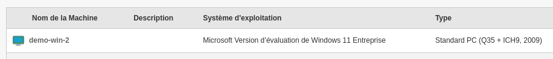
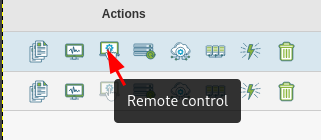

Installer Medulla (à partir du lien de téléchargement)¶
Exigences¶
Medulla doit être installé sur un serveur Debian Linux, Debian 12 (Partitionnement suggéré / 20Go ext4 et /var 400Go XFS).
Installer le serveur Medulla¶
Une fois téléchargé, exécutez le script suivant :
source install.sh
Attendez que le processus d’installation se termine, un résumé affichera tous les mots de passe nécessaires (copiez-les dans un endroit sûr).
Pour accéder à l’interface Medulla
ou
Installer l’agent Medulla¶
L’agent Medulla est téléchargeable depuis
http://dns-serveur/telechargements/win
L’agent Medulla peut être installé manuellement ou en silence
Medulla-Agent-windows-FULL-latest.exe /S
Le processus d’installation continuera après la fin de l’installation, il installera toutes les dépendances.
Il se termine lorsque l’ordinateur apparaît dans Medulla.

Première étape¶
À la connexion, découvrez le menu principal.

Exemple de bureau à distance¶
Faites un contrôle à distance, trouvez votre ordinateur, cliquez sur « Contrôle à distance »

Sélectionnez le type de bureau à distance à utiliser.

Un nouvel onglet s’ouvrira avec le bureau à distance.
N’oubliez pas d’accepter la fenêtre contextuelle dans votre navigateur